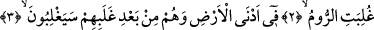
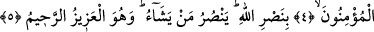

ilimlerle meşgul olup Ma‘lûm’dan geri kalanlar onların hakîkatlarına ermeyi ummazlar.
Allah Teâlâ’dan bizi şühûdî işlere mâni olan varlıkla ilgili alâkaların tehlikelerinden
kurtarmasını niyaz ederiz.
2-5. Rumlar, (Arapların bulunduğu bölgeye) en yakın bir yerde yenilgiye
uğradılar. Halbuki onlar, bu yenilgilerinden sonra birkaç yıl içinde galip
geleceklerdir. Eninde sonunda emir Allâh’ındır. O gün müminler de Allâh’ın
yardımıyla sevineceklerdir. Allah, dilediğine yardım eder. O, mutlak güç sâhibidir,
çok esirgeyicidir.
“Rumlar, (Arapların bulunduğu bölgeye) en yakın bir yerde yenilgiye uğradılar.”
“__WORD__ el-Müfredât’ta belirtildiği üzere yenmek, gâlip gelmek; Keşfü’l-esrâr’da
belirtildiği üzere ise savaşta rakibin mukavemetini kıracak şekilde ona hâkim olmaktır.
Rumlar, İbrahim (a.s.) oğlu İshak oğlu Iys oğlu Rûm’un çocuklarıdır. Onlardan ilk
Rumlar, Nuh (a.s.) oğlu Yâfes oğlu Yûnan oğlu Rûm’un çocuklarıdır. Fars ise Nuh (a.s.)
oğlu Sâm oğlu Fâris’e nisbet edilen millettir.
“__WORD__ kelimesi ile bazen daha az ve daha küçük olan ifâde edilir. Bu durumda en
çoğun karşılığı olur. Bazen en değersiz ve en zelil olan ifâde edilir. Bu durumda en
yüksek ve en üstün olanın karşılığı olur. Bazen ilk olan ifâde edilir, bu durumda
sonuncunun karşılığı olur. Bazen en yakın ifâde edilir. Bu durumda en uzağın karşılığı
olur. Bu âyette kastedilen de budur. Yâni onlar Arap topraklarından Rumlara en yakın
olan yerde demektir. Çünkü Şam bölgesi Araplarca bilinen bir bölgedir. Ya da bu ifâde
Rum topraklarından Araplara en yakın olan yerde demektir. Burası Dicle ve Fırat
arasındaki Cezîretü’l-Arab/Arap Yarımadası’dır.
Mânâ şöyledir: Rumlar mağlup oldular; yâni Farslar, Rum topraklarına nispetle Arap
topraklarına en yakın yerde onlara üstün geldiler.
Gâlip geldikleri zaman İranlılar’ın kralı Şirin’in sevgilisi Hüsrev diye tanınan Pervîz
b. Hürmüz b. Enûşirvan b. Kubâd idi. Pervîz muzaffer, Enûşirvan’ın ise saltanatı
yenilenen demektir. Hz. Osman (r.a.) zamanında öldürülen İran krallarının sonuncusu
Yezdicerd b. Şehriyâr b. Pervîz’dir. Rumların kralı ise Hirakl’di. O, ilk olarak altın
para (dînar) bastıran ve para ile alışverişi icad eden kimsedir.
‘Farslar ve Rumlar, Acemlerin (Arap olmayanların) Kureyş’idir.’ denilmiştir. Bir
hadîste: “Îman Süreyya yıldızına asılı olsaydı yine de Farslar mutlaka ona
ulaşırdı.”[2] buyrulmuştur.